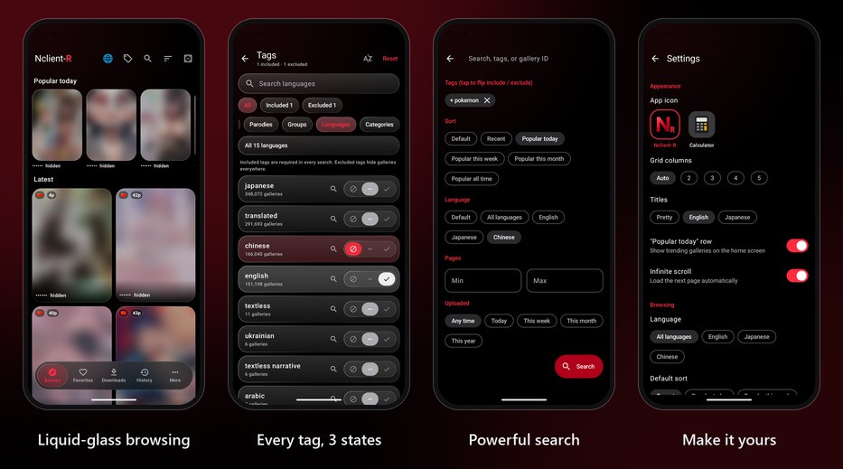
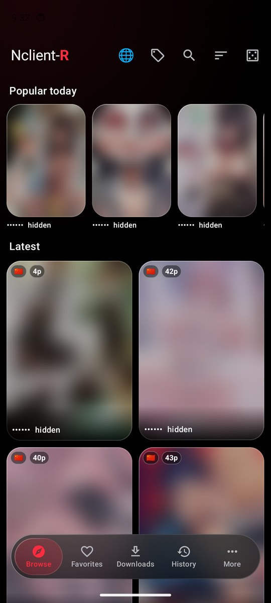
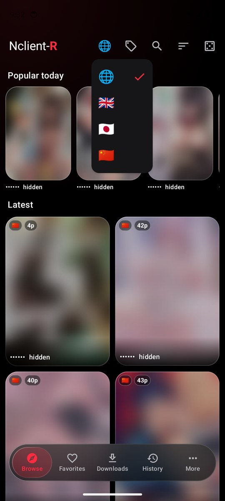
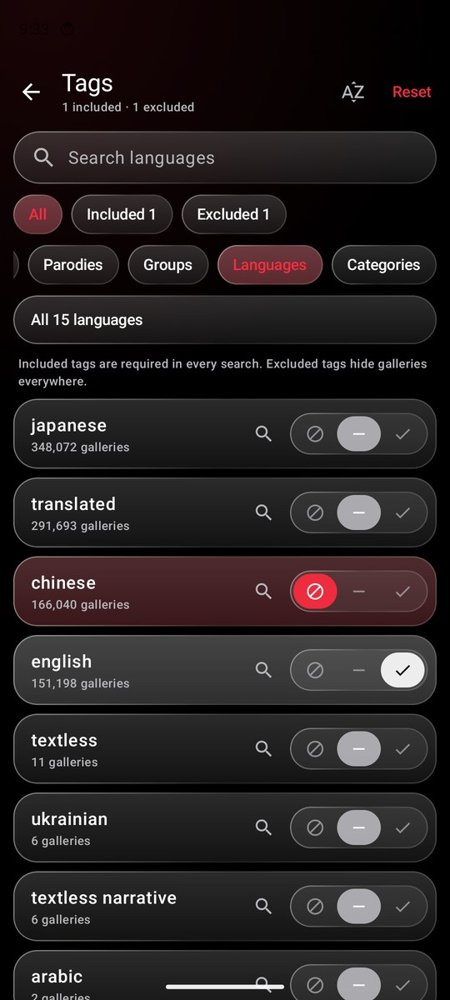
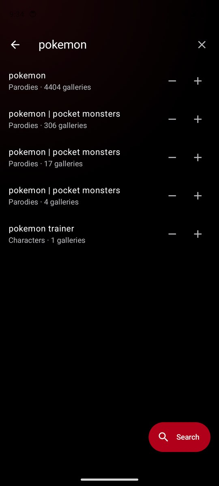
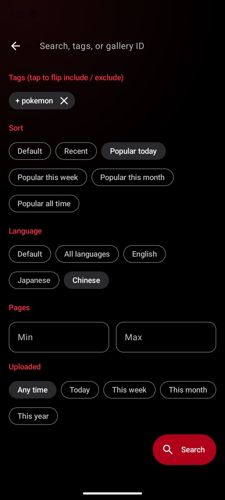
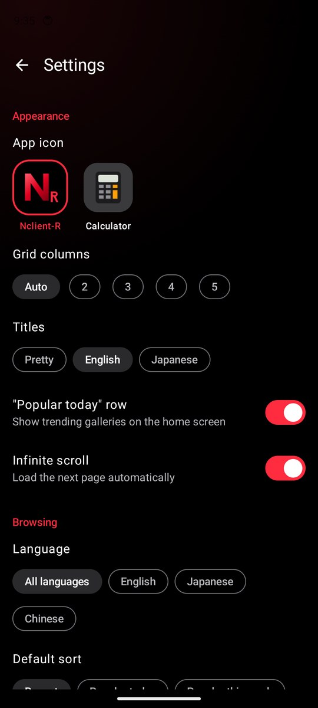
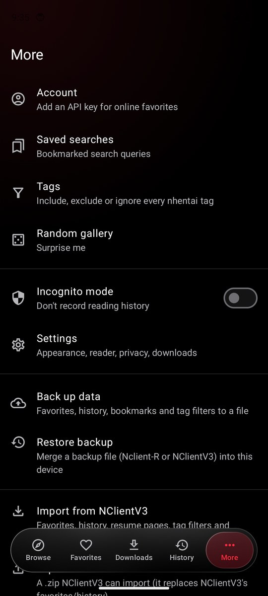

A fast, private NClient app for Android. Picks up where NClientV3 left off.

NClientV2 started it. NClientV3 kept it burning. When development stopped, Nclient-R picked it up, not as a patch but as a complete rewrite that keeps every feature you rely on and pushes far beyond them.
Where it all began.
Kept it alive. No longer maintained.
Actively developed.
Pure black, frosted white glass, one red accent. Blurred bars and a floating glass nav pill.
Original full-resolution pages, whole-gallery preloading, nearest pages first. Swipe, and it's there.
~86,000 tags from nhentai's own directory. Include, neutral or exclude, each with one tap.
Favorites, status lists, history with resume page, tag filters and bookmarks, even from damaged backups.
PIN + biometrics, blurred covers, hidden titles, incognito and a calculator icon disguise.
Background downloads that survive restarts. Export to CBZ or PDF in one tap.
Shown with Discreet mode on: covers blurred, titles hidden.







Grab Nclient-R-v1.0.0.apk from the latest GitHub release.
Open it and allow “Install unknown apps” if your phone asks.
Coming from NClientV3? More → Import from NClientV3.
Request a feature, report a bug, or leave a star.